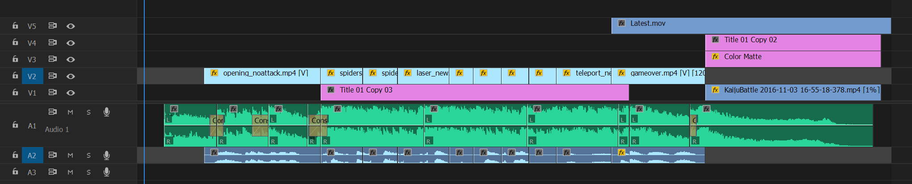

Into the Breach Announcement Trailer
Use your mechs to defend the last cities on earth from being destroyed by giant monsters in this turn-based tactics game by the makers of FTL.
Credits
Edit - Marlon Wiebe
Game - Subset Games
Music - Ben Prunty
Audio - Power Up Audio
Making Of
Because of all the unique interactions between the environment and the characters in this game and the way they are shown in game, we knew that we wanted to let the game show off as much as possible and not try to overcomplicate the trailer. I really wanted to avoid the trap of using too much text in a trailer, and that was possible as the devs made everything have great visual feedback to your actions.
 {: .col-12 }
A sample of some of the great interactions in the game.{: .image-comment }
{: .col-12 }
A sample of some of the great interactions in the game.{: .image-comment }
It’s great to be working with Ben Prunty as well, he’s incredibly talented composer and allowed me to chop up one of his original songs to fit the trailer layout and he was able to send it back with my incredibly rough edits smoothed out. I often edit music and shorten or jam together parts of the song that don’t necessarily follow the original melody or structure in order to follow what’s going on in the trailer.
{: .col-12 } The initial trailer layout with music edits in green.{: .image-comment }
After the song and the gameplay were in, Power Up Audio’s Joey Goddard took the mix and made sure that any missing sound effects were added back in and that the whole mix sounded crisp. They make audio seem easy! (hint: it’s not)
For more info check out the official announcement page on Subset Games’ Website and GET HYPED!